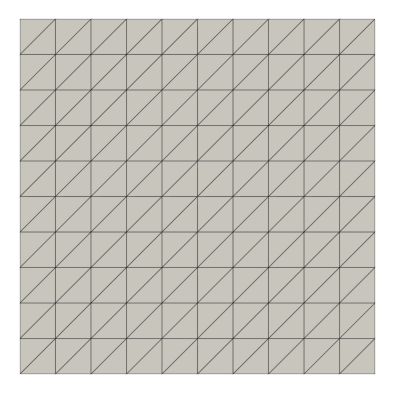

Introduction to DOLFINx
Contents
Introduction to DOLFINx#
We start by importing DOLFINx, and check the version and git commit hash
import dolfinx
print(f"You have DOLFINx {dolfinx.__version__} installed, " +
"based on commit \nhttps://github.com/FEniCS/dolfinx/commit/"
+ f"{dolfinx.common.git_commit_hash}")
You have DOLFINx 0.4.2.0 installed, based on commit
https://github.com/FEniCS/dolfinx/commit/1b27281ac329f1cd1fd7cb3e2d66096e53ad47c3
Using a ‘built-in’ mesh#
No wildcards *, as in old DOLFIN, i.e.
from dolfin import *
We instead import dolfinx.mesh as a module
import dolfinx
from mpi4py import MPI
mesh = dolfinx.mesh.create_unit_square(MPI.COMM_WORLD, 10, 10)
Interface to external libraries#
We use external libraries, such as pyvista for plotting.import dolfinx.plot
import dolfinx.plot
import pyvista
topology, cells, geometry = dolfinx.plot.create_vtk_mesh(mesh)
grid = pyvista.UnstructuredGrid(topology, cells, geometry)
pyvista.start_xvfb(0.5) # Start virtual framebuffer for plotting
plotter = pyvista.Plotter()
renderer = plotter.add_mesh(grid, show_edges=True)
# Settings for presentation mode
plotter.view_xy()
plotter.camera.zoom(1.35)
img = plotter.screenshot("fundamentals_mesh.png",
transparent_background=True,
window_size=(1000,1000))
Plot mesh using matplotlib#
import matplotlib.pyplot as plt
plt.axis("off")
plt.gcf().set_size_inches(7,7)
fig = plt.imshow(img)
